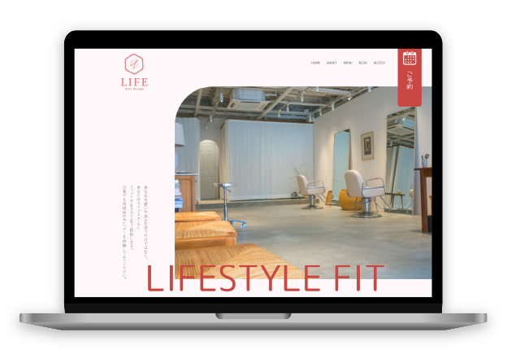
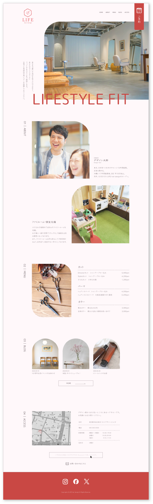

美容室のHPを制作しました。
メインのターゲットは20～50代女性と幅広い年齢層なので、
コーポレートカラーのピンクを基調としたシンプルで落ち着きの
あるデザインを目指しました。
最終目的としては、認知向上からの予約獲得やSNSフォロワーUP
なので、予約ボタンを常にサイトの右上に配置し、Footerの赤色の上にSNSのアイコンを目立つように配置しました。
URL▶︎https://satomi-szk.github.io/lifestyle_fit.github.io/
©tsunagu design.